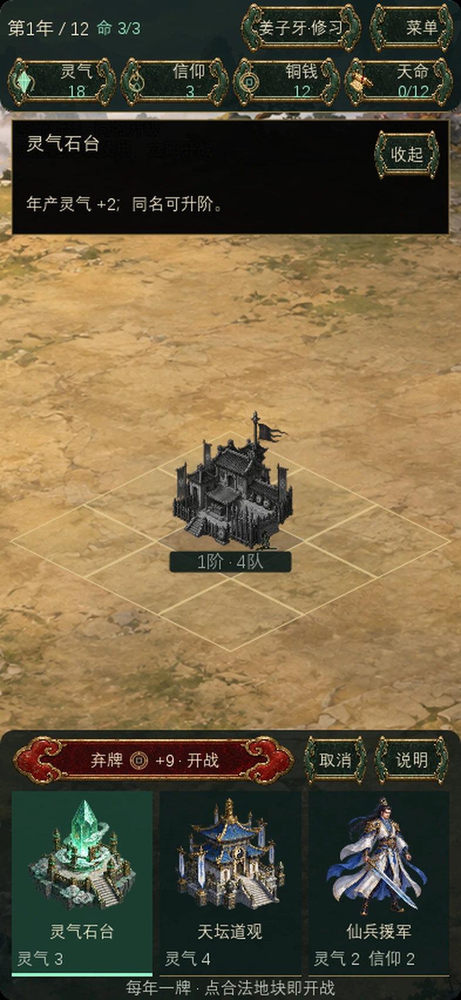
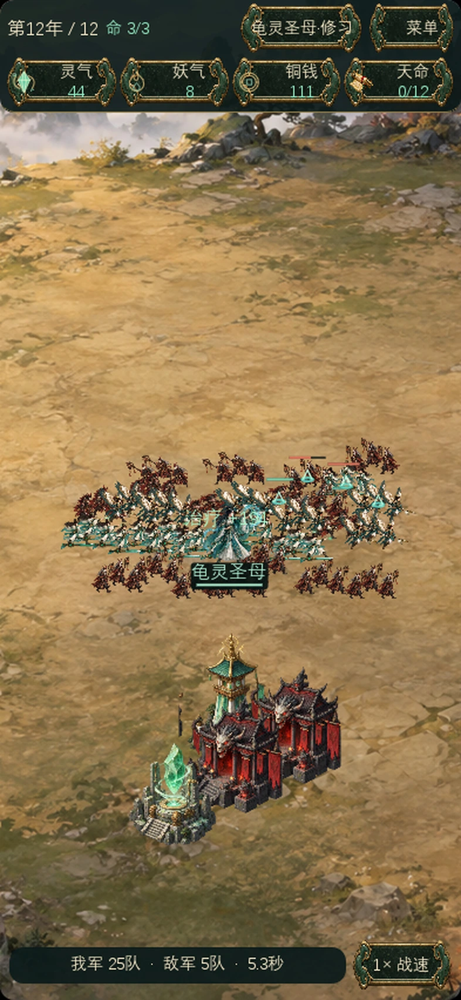
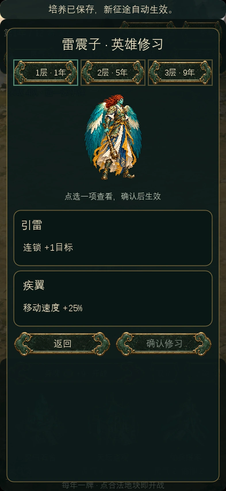

有限手牌压缩每回合决策
以三张手牌聚焦当前选择，将建筑、军团和神器放在同一资源与空间约束下比较。
TAPTAP MAKER / 个人 AI 游戏实践
三牌构筑 / 城池经营 / 自动战斗
选择阐教或截教英雄，用三张手牌经营城池、布置建筑与军团。有限空间和铜钱决定每年的准备，布阵完成后自动交战。

TapTap 公开测试 · 2026.10.25 核对
GAMEPLAY / 核心体验
点选手牌，在合法地块或建筑主体上部署建筑、军团和神器，再进入自动交战。战后选择奖励，围绕英雄技能和修习分支完善阵容；公开介绍包含两教八位英雄、十二年征伐与局外培养。
TAPTAP GALLERY / 游戏展示图
以下来自 2026.10.25 核对的 TapTap 公开游戏页展示图；保留原图，部分含商店宣传文案，不冒充本次重新运行游戏的实机录制。
点击任意截图可查看原图。 多张画面可左右滑动，也可聚焦图库后使用方向键浏览。


DESIGN / 规则与取舍
以三张手牌聚焦当前选择，将建筑、军团和神器放在同一资源与空间约束下比较。
布置先决定阵容关系，战斗再验证准备结果，让观察、部署与反馈构成循环。
两教英雄拥有各自技能与修习，战后奖励承接持续成形的阵容。
十二年推进形成单轮目标，英雄解锁与培养连接多次挑战，不将其表述为在线多人对战。
MY PRACTICE / 项目推进
作为个人AI策略游戏实践收录，重点展示卡牌、经济、布阵空间与战斗反馈的衔接。公开资料用于解释规则结构，不扩展为未经确认的商业成绩或个人独立美术执行。
TAPTAP / 游戏入口
试玩入口与当前可玩版本以 TapTap 游戏页为准；公开介绍中的功能和数量属于开发者在平台展示的信息。